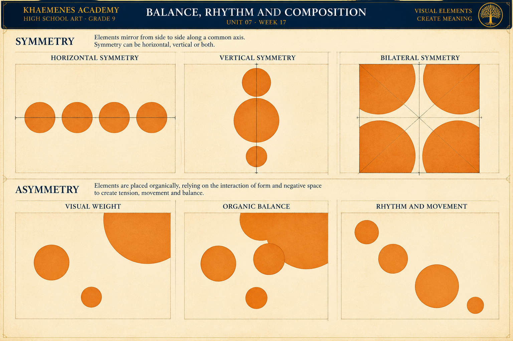

Balance
Symmetrical, asymmetrical and radial arrangements distribute visual weight differently. Balance does not require equal size, equal color or identical objects.
KHAEMENES ACADEMY · ART 101 · UNIT 07
Unit 07 · Composition, Rhythm and Visual Communication
How do artists organize shapes, spaces, values and repeated forms to guide attention and communicate an idea?
Building on Unit 06's spatial narrative, Week 17 shifts from constructing convincing environments to making deliberate choices about visual emphasis, balance and rhythm.
Symmetrical, asymmetrical and radial arrangements distribute visual weight differently. Balance does not require equal size, equal color or identical objects.
Scale, value, color, placement and detail can create primary, secondary and supporting emphasis. A focal point is designed, then tested through observation.
Repeated forms, intervals and directional lines organize visual movement. The empty shapes around objects are active parts of the composition.
Draw a 20 × 20 cm square. Place a large dark leaf cluster in the upper-left quadrant. Add three smaller, lighter plant forms along a gentle diagonal toward the lower-right. Repeat curved stems at changing intervals to establish rhythm. Keep a quiet area of negative space for the exhibition title. Make a second thumbnail with the largest leaf cluster centered. Compare how the viewer's eye travels through each design. Adjust contrast and spacing, and annotate one improvement in the revised version.
This is an illustrative design experiment, not a claim that every viewer will follow the same eye path.
Examine the original Academy instructional poster. Compare the three symmetry studies across the upper row with the asymmetrical visual-weight, organic-balance and rhythm studies below. Observe how repeated circles, changing scale, placement and surrounding negative space can establish order or suggest movement. Note that the illustrated horizontal and vertical examples invite careful analysis of the actual reflection axes rather than relying on labels alone.

1 · Reflection: identify which designs truly mirror across a horizontal or vertical axis; explain any mismatch between the diagram and its label. 2 · Bilateral organization: trace the axes in the four-part arrangement. 3 · Visual weight: compare the largest circle with the smaller circles and describe the resulting tension. 4 · Organic balance: explain how clustered forms and empty space affect equilibrium. 5 · Rhythm: trace the path suggested by repeated circles and changing intervals. 6 · Revision: redraw one panel using a different focal point or balance strategy, preserving the original and explaining your design choices. Save the annotated study as portfolio evidence.
Choose an accessible original scene or a properly credited artwork. Sketch its largest three masses, identify a focal point, and mark three pathways that guide attention. Distinguish visible evidence—contrast, scale, position and overlap—from your interpretation of the artist's intention.
Make four small black-and-white thumbnails of one subject: symmetrical balance, asymmetrical balance, radial organization and an intentionally unstable arrangement. Repeat a shape or interval to create rhythm. Label where the eye enters, pauses and exits each layout.
Begin with a square picture area. Position one large dark leaf cluster off-center and counterbalance it with three smaller lighter shapes. Repeat a curved stem motif to lead the eye toward a central seedling. Reserve a quiet region of negative space for a short title. Make a second version with the largest mass centered; compare the resulting focal hierarchy rather than assuming one is universally better.
Design an original exhibition poster, narrative scene or visual essay using a clear focal point, three levels of emphasis, at least one repeated motif, and deliberately shaped negative space. Produce two drafts; ask a viewer to identify the focal point without explanation. Revise the contrast, crop or spacing in response and retain both versions.
Research two attributed compositions from different eras or artistic traditions using museum, artist or institutional records. Cite creator, title, date if known, medium, URL and access date. Discuss how each uses balance and hierarchy without making unsupported cultural generalizations. Archive a 150–250 word reflection, critique and revision evidence.
Preserve your initial thumbnails and revised composition. Label the intended focal point, three levels of emphasis, and one deliberate use of negative space.
Browser-local saving is not authenticated Academy storage. Export a backup and confirm learner identity before sharing.
Visual analysis and composition vocabulary (20) · Four purposeful studies and alternatives (20) · Original hierarchy, balance and rhythm (30) · Critique and documented revision (15) · Research, reflection and portfolio evidence (15). Educator review remains separate from formative practice.
Five randomized questions from fifteen lesson-aligned items. Four correct meets the 80% practice target. Submitted answers lock; retakes start a fresh attempt. Browser-local results do not independently authorize Academy progression.
Archive your studies and final composition in the artist portfolio. Week 18 will develop rhythm, pattern and movement through increasingly intentional visual sequences.
Return to Unit 07 overview